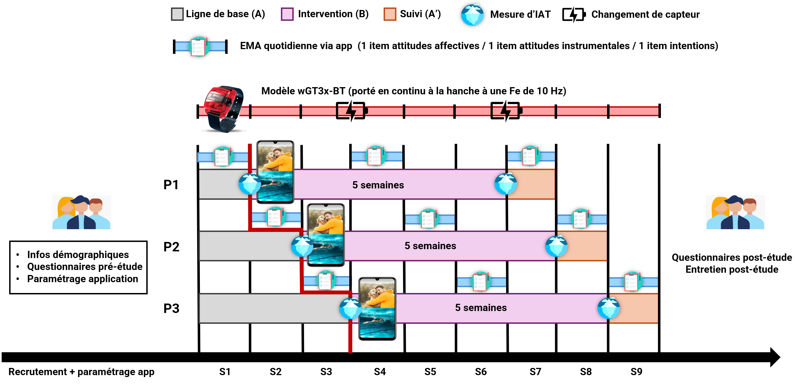

Cette note est destinée à vous donner des éléments d’information sur cette recherche. Si vous ne comprenez pas bien certains mots ou éléments de cette note, n’hésitez pas à demander des explications au chercheur. Vous êtes totalement libre d’accepter ou de refuser de participer à cette recherche. Le chercheur vous laissera le temps nécessaire pour prendre votre décision.
Merci pour l’intérêt exprimé à propos de cette étude de recherche. L'objectif de cette fiche d'information est de vous fournir un aperçu de l'étude à laquelle vous souhaitez participer volontairement en tant que sujet. Merci de lire les informations suivantes attentivement et n'hésitez pas à demander de plus amples explications si vous avez encore des questions ou des doutes. La signature du formulaire de consentement attestera de votre accord final pour participer à cette recherche.
Étude de l'effet d'une application de conditionnement évaluatif sur smartphone sur les comportements actifs – devis expérimental à cas unique (SCED).
L'étude vise à examiner les effets d'une application sur smartphone sur la perception et la modification des comportements actifs, en observant l'évolution de chaque participant au fil du temps. Votre participation à l’étude contribuera à une meilleure compréhension de la motivation à être actif.
Avant de pouvoir participer pleinement à l’étude, vous devrez compléter un court questionnaire de pré-inclusion en ligne (durée estimée : 3 à 5 minutes). Ce questionnaire nous permettra de récupérer vos données démographiques et de vérifier que :
Si vous remplissez ces critères, un code utilisateur personnel et anonyme vous sera attribué (ex : 9e461812). GARDEZ-LE PRÉCIEUSEMENT. Ce code vous permettra :
Vous serez également assigné(e) au hasard à une durée de phase initiale de mesure (1, 2 ou 3 semaines), décrite ci-dessous. Si vous acceptez de participer, votre implication durera entre 7 et 9 semaines selon la durée qui vous aura été attribuée, et se déroulera en trois phases principales, suivies d'un possible entretien de fin d'étude.
Dès le début de votre participation, vous recevrez en main propre (ou par voie postale via une enveloppe prépayée) un petit capteur d'activité accompagné de sa ceinture. Ce dispositif enregistrera vos mouvements quotidiens sans accéder à votre géolocalisation ; vous le porterez en continu à la ceinture pendant toute la durée de votre participation à l'étude (voir la « Notice d’utilisation du capteur ActiGraph »). Une notification vous sera envoyée chaque matin afin de confirmer que le capteur est bien en place autour de votre taille. Il vous suffira de cliquer sur « Je valide le port ». Dans le cas contraire, vous serez contacté(e) par le chercheur afin de vérifier le bon port du capteur et/ou d’identifier la raison de son non-port.
Vous recevrez également, dès cette phase, les consignes pour installer l'application sur votre smartphone et vous y connecter à l'aide de votre code utilisateur (voir « Déroulement de la partie application » ci-dessous). Durant cette phase, l'application enregistre uniquement la fréquence de vos déverrouillages, sans afficher les images. Vous serez invité(e) à répondre, quotidiennement pendant une semaine (le matin entre 6h00 et 13h00), à de très courtes questions (quelques secondes) sur vos attitudes ou intentions envers l'activité physique, ainsi qu'à réaliser un test informatisé d'environ 5 minutes qui vous sera envoyé par mail.
L'application affichera désormais automatiquement une image brève chaque fois que vous déverrouillez votre téléphone, parmi les 30 images que vous aurez sélectionnées lors de l'installation, sans en perturber le fonctionnement normal. Vous continuerez de porter le capteur en continu (24 h/24 et 7 j/7) et de valider son port via les notifications quotidiennes envoyées par l’application. Au cours d'une semaine de cette phase, vous serez à nouveau invité(e) à répondre quotidiennement (le matin entre 6h00 et 13h00) aux courtes questions sur votre smartphone. L'application inclut également un formulaire intégré permettant de signaler à tout moment d'éventuels bugs ou dysfonctionnements (Paramètres > Signaler un bug).
L'affichage des images s'arrête. Vous continuerez de porter le capteur en continu (24 h/24 et 7 j/7) et répondrez, au cours de cette semaine, aux courtes questions sur votre smartphone. Un second test informatisé d'environ 5 minutes, identique au premier, vous sera proposé au cours de cette phase.
À l'issue de la phase de suivi, vous serez invité(e) à participer à un entretien individuel (en ligne ou en présentiel) afin de répondre à certaines questions, partager votre expérience et vos impressions sur l’étude.

Portez-le constamment à la hanche pendant toute la durée de l’étude (24 h/24 et 7 j/7). Le placement du capteur doit rester relativement le même tout au long de l’étude : il ne doit pas changer d’un jour à l’autre (hanche droite / gauche).
Vous recevrez un lien ainsi que les instructions pour installer l'application. Lors de votre première connexion, il vous sera demandé de renseigner le code utilisateur reçu lors de votre inclusion dans l'étude et de créer votre mot de passe (à garder précieusement). Lors de cette installation, trois étapes supplémentaires vous seront demandées :
NB : si vous rencontrez des difficultés, n’hésitez pas à nous contacter (Paramètres > Contacts).
Utilisez votre téléphone comme à votre habitude. Il est essentiel de signaler tout bug dès son apparition pour garantir le bon fonctionnement de l'application (Paramètres > Signaler un bug). Les images ne s'affichent qu'à partir de la phase d'intervention (Phase B), pas avant.
NB : si une anomalie est détectée par le chercheur (ex. fonctionnement anormal de l’application, non-port du capteur, absence de réponse aux questionnaires), vous serez contacté(e) par le chercheur.
Au cours de la semaine de questionnaires prévue à chaque phase (A, B, A'), répondez aux très courtes questions envoyées chaque matin depuis l'application (quelques secondes chacune). Le test informatisé sur ordinateur (environ 5 minutes) n'est réalisé que deux fois au total : au début de la phase A et à la fin de la phase A'. Il vous sera envoyé par mail et un rappel vous sera adressé par SMS.
Vous ne pouvez pas vous attendre à tirer un bénéfice direct de votre participation à cette recherche, si ce n’est de contribuer à l’avancée des connaissances scientifiques.
Cette recherche ne présente pas de risques plus grands que ceux encourus dans votre vie quotidienne. L'utilisation du capteur et de l’application, la réalisation du test informatisé, le remplissage des questionnaires en ligne ainsi que la participation à l’entretien ne présentent aucun danger pour votre santé.
Si vous participez à cette recherche, toutes nouvelles informations susceptibles de remettre en question votre participation vous seront communiquées. Toutes les données recueillies seront anonymisées et identifiées par un code pour garantir la confidentialité (normes RGPD). Vous pouvez, à tout moment et sans justification :
Pour exercer ces droits ou poser toute question relative au traitement des données, contactez le chercheur responsable du projet ou le Délégué à la protection des données : dpo@umontpellier.fr. Si vous le souhaitez, les résultats globaux de cette recherche vous seront communiqués à sa conclusion.
Si vous avez des questions, n'hésitez pas à les poser ! Votre participation nous est extrêmement précieuse et nous vous remercions par avance pour votre contribution à la recherche scientifique.